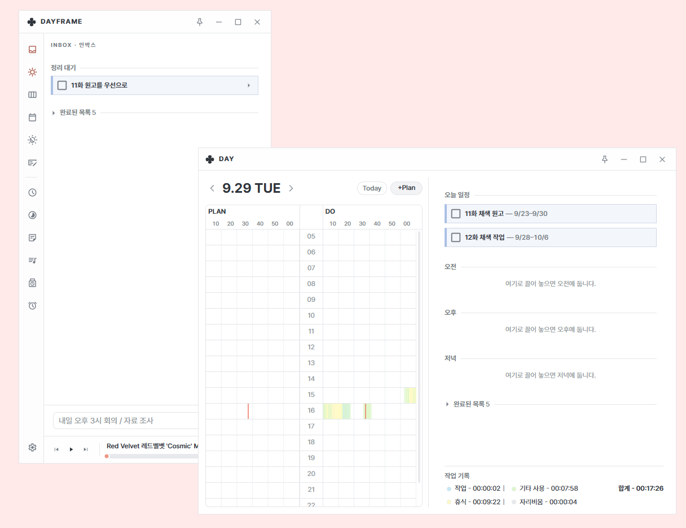
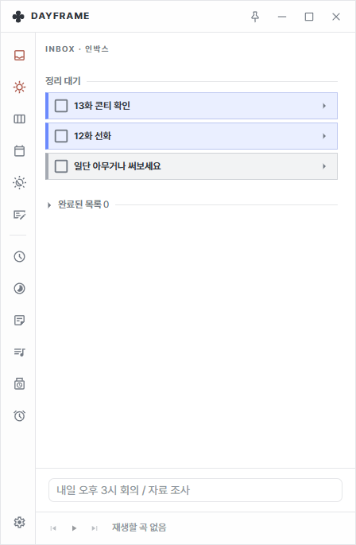
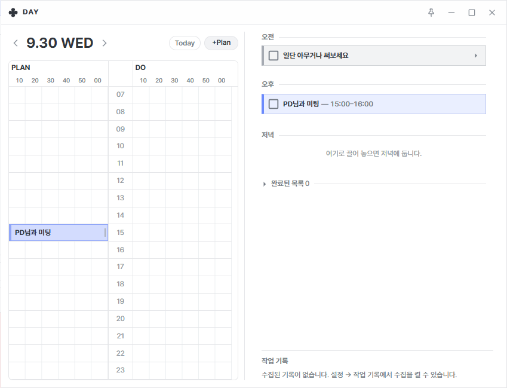
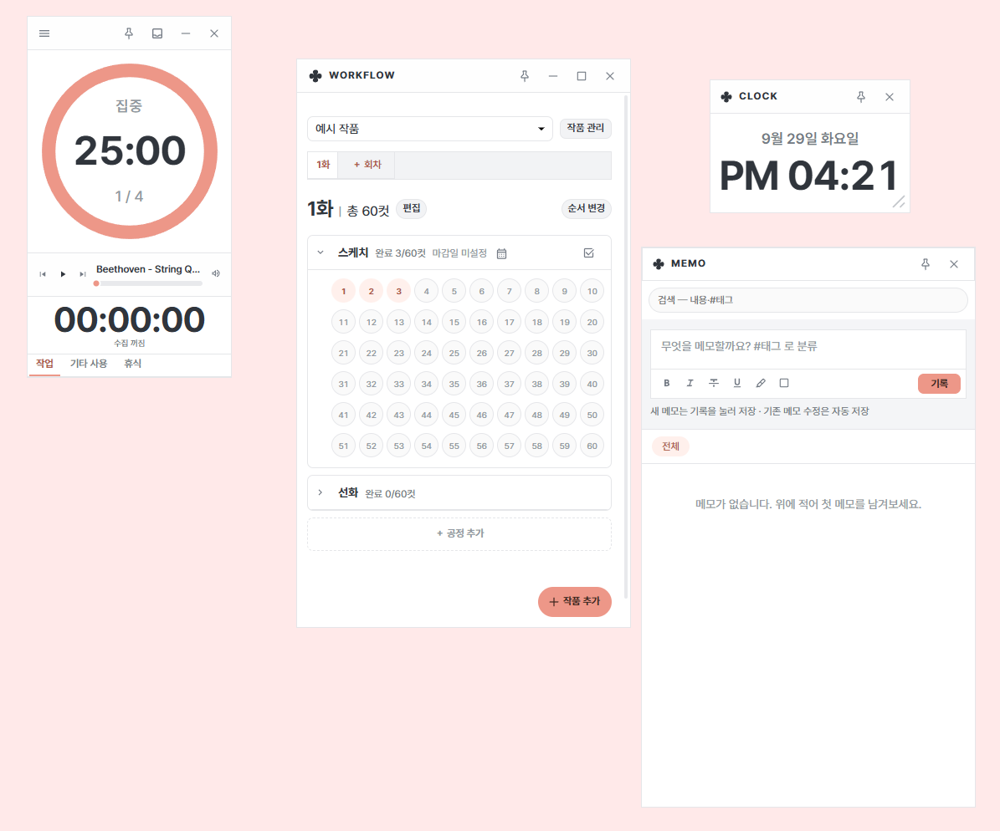

웹툰 작가를 위한 일정 관리
생각나는 일은 먼저 적고,
작업할 때는 필요한 것만.
일단 적고, 대략 언제 할지 정한 뒤, 시간이 정해진 일정만 타임테이블에 배치하세요.
Dayframe은 AI와 대화하며 코드를 작성하는 바이브 코딩으로 만든 프로그램입니다.
- Windows 10·11 · macOS(Apple Silicon)
- 기록은 내 PC에 저장
- 릴리즈 자세한 정보

시간의 정확도를 필요한 만큼만 정합니다.
-

1 Inbox
떠오른 일을 판단하기 전에 먼저 적어 둡니다.
-

2 Anchor Time
정확한 시간이 필요 없다면 오전·오후·저녁만 정합니다.
-

3 Focus
작업할 때는 지금 할 일과 타이머만 꺼내 씁니다.
필요한 창만 꺼내 씁니다.
Workflow
공정별 체크보드·작업량 기록
마감 계산기
남은 분량과 작업일로 하루 목표를 계산합니다.
마감 계산기 사용법Memo
#태그로 빠른 기록
Habit
습관 체크와 알림
Time
시계·뽀모도로·타임랩스
Music
YouTube 재생목록
iCal
외부 일정 가져오기
Dayframe 0.3.0
Windows용 0.3.0입니다. 업데이트 전에 JSON 백업을 저장해 주세요.
Mac용 0.3.0은 준비와 확인이 남아 있습니다.